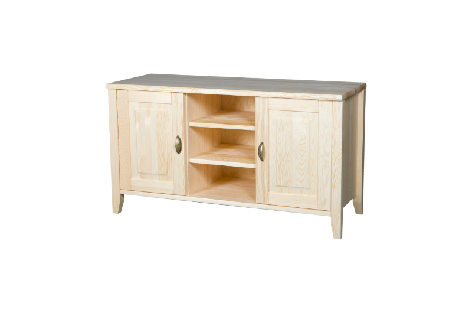
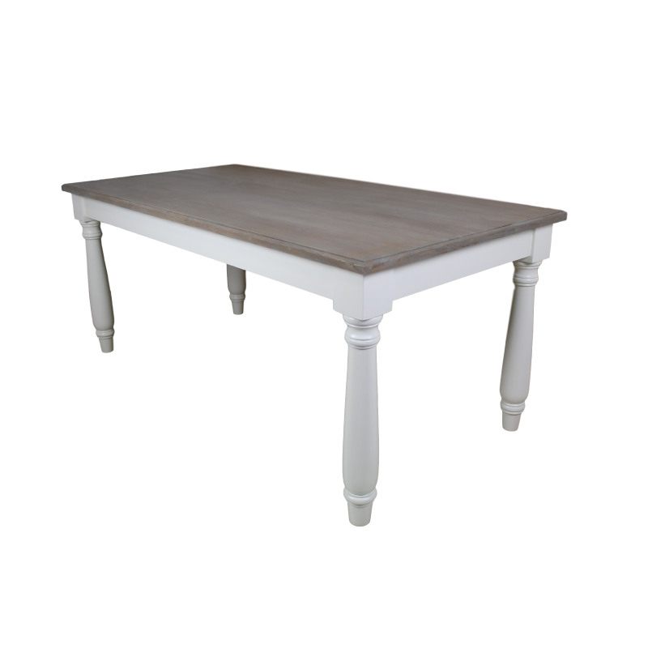

Dane Kontaktowe
Imię i Nazwisko: Jan Kowalski
Email: jan.k@mail.com
Telefon: +48 333222111
Adres: ul. Wiejska 1 Kraków, Polska

Edukacja
Licencjat ze Sztuk Drewnianych, Uniwersytet Krakowski, 2010-2014
Doświadczenie Zawodowe
Asystent Stolarza w Woodex, 2015-2020
Stolarz w WoodCompany, 2020-obecnie
Projekty
Projekt 1: Drewniana szafka
Wykonana z drewna dębowego, szafka posiada trzy półki i klasyczne drzwi.
Projekt 2: Stół jadalniany
Solidny stół z drewna bukowego, pomieści do 8 osób. Doskonały do jadalni.
